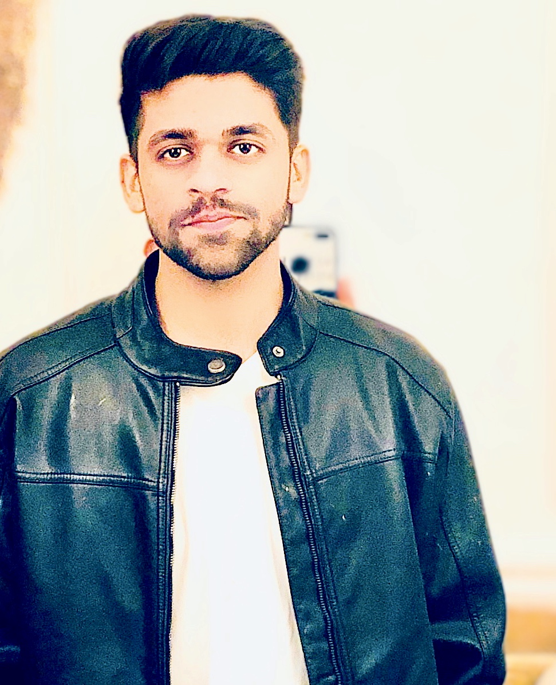

Dr. Maulik Mathur
MD Radiologist 🩺 | Web Developer 🖥️
About Me
I hold a MBBS graduated degree and currently pursuning my Postgraduate in Radiology from India.
I love to solve problems and puzzles and it inspires me to code and i believe that healthcare can be improved alot by technological involvement.
Education
- School - St. Anselms Sr. Sec. School, Ajmer, India
- Grad College- Medical Education-Bukovenion Medical Univesity, Ukrine
- Post-Grad College- ???
Work Experience
Research Assistant (RA) at Bukovinion State Medical University, Ukraine
(From September 2018 to June 2019)
Intern Doctor at Jawhar Lal Nehru Medical College, Ajmer (India)
(From June 2019 to July 2020)- with Internship Completion Cerificate
- General Medicine Department
- Psychiatry Department
- ENT Department
- Pediatric Department
- Casulity Department
- Anaesthesiology Department
- General Surgery Department
- Forensic Medicine Department
- Orthopedic Department
- Community Medicine Department
- Obstratics and Gynecology Department
Java Language Beginner Certificate
(From August 2024 to September 2024)- (Certificate)
Hobbies/Passion
- Treating People
- Dance
- Photography/Videography
- Blogging
Skills
Soft Skills
- Communication
- Critical thinking
- Adaptibility
Hard Skills
- Research
- Public Relations
- Foreign Language
Contact
Copyright © 2024 Maulik Mathur Archives. All Rights Reserved.
{kind=link}
{kind=link}
{kind=link}
{kind=link}
{kind=link}
{kind=link}